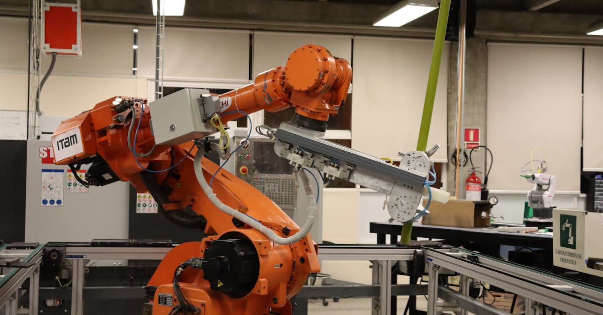
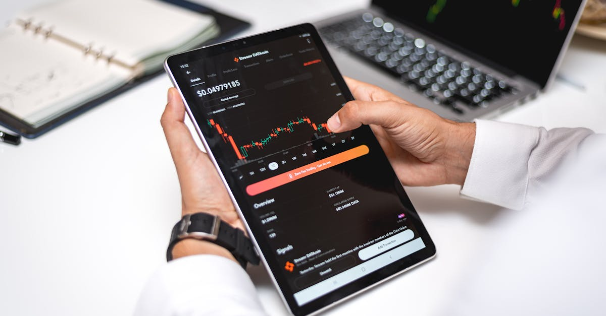

Madison Air : Quand l'Industrie Réinvente son Entrée en Bourse
L'actualité financière est souvent dominée par les géants de la technologie, les licornes en devenir ou les secousses des marchés financiers. Pourtant, l'annonce de l'introduction en bourse (IPO) de Madison Air a créé une onde de choc bien particulière, rappelant que l'industrie traditionnelle, loin d'être figée, possède une capacité de transformation et d'attraction digne des plus grands. Jill Wyant, la PDG visionnaire à la barre, a orchestré ce qui est désormais salué comme la plus grande IPO industrielle depuis 1999. Un exploit remarquable qui nous pousse à nous interroger : quels sont les rouages de ce succès et quelles leçons peut-on en tirer pour l'investissement moderne, notamment à l'ère de l'intelligence artificielle ?
👉 À lire : L'IA : une révolution économique sans précédent ?
Madison Air, bien que moins médiatisée que ses homologues technologiques, représente un acteur clé dans un secteur industriel en pleine mutation. Son modèle d'affaires, ancré dans l'efficacité opérationnelle et l'innovation discrète, a su séduire les investisseurs dans un contexte économique pourtant incertain. C'est une démonstration éclatante que la valeur peut être trouvée là où on l'attend le moins, et que la perspicacité managériale reste un pilier fondamental de la réussite boursière. Les analystes s'accordent à dire que la capacité de Madison Air à conjuguer héritage industriel et adaptation aux défis contemporains a été un facteur déterminant.
👉 À lire : Pénurie de RAM : Faut-il s'inquiéter pour l'IA ?
Ce n'est pas tous les jours qu'une entreprise industrielle capte autant l'attention du marché. L'exploit de Jill Wyant et de son équipe n'est pas seulement d'avoir levé des capitaux considérables ; c'est aussi d'avoir repositionné tout un secteur sous un nouveau jour, prouvant que l'innovation ne se limite pas aux écrans et aux algorithmes. Mais comment cette performance historique résonne-t-elle avec les principes de l'épargne intelligente et de l'investissement automatisé par IA ? Est-ce un signe que l'IA elle-même pourrait identifier de telles pépites dans des domaines traditionnels, souvent ignorés par les investisseurs individuels ?
L'histoire de Madison Air est une étude de cas fascinante. Elle nous invite à regarder au-delà des titres tape-à-l'œil et à comprendre les forces sous-jacentes qui animent les marchés. La rigueur, la vision stratégique et une exécution impeccable sont des qualités intemporelles. Cependant, l'apport de l'intelligence artificielle dans l'analyse de ces facteurs pourrait bien être la clé pour démocratiser l'accès à de telles opportunités. Imaginez un agent IA capable de déceler les signaux faibles, de croiser des données macroéconomiques avec des performances sectorielles pour identifier le prochain Madison Air avant qu'il ne devienne une évidence. C'est la promesse d'une épargne optimisée, 24h/24, qui ne laisse aucune pierre non retournée.

Le Contexte Historique : Pourquoi cette IPO est un Événement Marquant ?
Pour comprendre pleinement la portée de l'IPO de Madison Air, il est essentiel de la replacer dans son contexte historique. Remonter jusqu'à 1999, année de la dernière IPO industrielle d'une telle envergure, c'est se projeter dans une ère pré-bulle internet, où le paysage financier et technologique était radicalement différent. À l'époque, les préoccupations tournaient autour du bug de l'an 2000 et l'euphorie des dot-com commençait à peine à monter en flèche. Aujourd'hui, nous évoluons dans un monde hyperconnecté, où les données sont reines et où l'intelligence artificielle redéfinit les frontières du possible.
Qu'est-ce qui a changé en plus de deux décennies pour qu'une entreprise industrielle parvienne à un tel tour de force ? Premièrement, le secteur industriel lui-même a connu une mutation profonde. Loin des images d'usines poussiéreuses et obsolètes, l'industrie moderne est désormais synonyme de haute technologie, d'automatisation avancée et de chaînes d'approvisionnement intelligentes. Des concepts comme l'Industrie 4.0, l'Internet des Objets (IoT) industriel et la maintenance prédictive, tous alimentés par l'IA, sont devenus des réalités qui transforment l'efficacité et la rentabilité.
Deuxièmement, le marché des capitaux est devenu plus sophistiqué. Les investisseurs, échaudés par les bulles passées, recherchent désormais des valeurs plus tangibles, des modèles d'affaires éprouvés et des perspectives de croissance durables, même dans des secteurs moins « glamour ». L'analyse fondamentale, souvent mise de côté au profit de la spéculation rapide, retrouve ses lettres de noblesse. C'est ici que l'IA joue un rôle crucial. Les outils d'analyse prédictive basés sur l'IA peuvent passer au crible des milliards de points de données pour identifier les entreprises dotées de fondations solides et d'un potentiel de croissance inexploité, précisément comme Madison Air.
L'IPO de Madison Air est donc le reflet d'une convergence : celle d'une industrie qui s'est modernisée en profondeur et d'un marché financier qui a appris à valoriser cette modernisation. C'est une réaffirmation de la valeur des fondamentaux, mais avec un twist technologique. « Cette IPO démontre que la véritable innovation n'est pas toujours celle qui fait le plus de bruit, mais celle qui crée une valeur réelle et durable dans l'économie », affirme un économiste de renom. Pour l'épargnant, cela signifie que des opportunités lucratives peuvent exister bien au-delà des GAFAM, et que les outils d'IA peuvent être des alliés précieux pour les débusquer et les intégrer dans un portefeuille diversifié et performant, optimisé 24h/24.
La Stratégie de Jill Wyant : Ingéniosité, Vision et Exécution Impeccable
Au cœur de cette réussite historique se trouve la leadership éclairé de Jill Wyant. Sa vision et sa capacité à exécuter une stratégie complexe dans un marché exigeant sont des éléments clés de l'IPO record de Madison Air. Wyant n'a pas seulement dirigé une entreprise ; elle a sculpté une narration, mis en lumière des atouts souvent sous-estimés du secteur industriel, et a su convaincre un marché sceptique de la robustesse et du potentiel de croissance de Madison Air. Sa démarche est un cas d'école pour toute entreprise cherchant à se positionner pour une croissance future, qu'elle soit technologique ou traditionnelle.
L'une des premières leçons de la stratégie de Wyant est l'importance de la différenciation et de la valorisation des compétences uniques. Madison Air n'est pas simplement un conglomérat industriel ; c'est une entité qui a investi massivement dans l'efficacité opérationnelle, la durabilité et l'intégration technologique. Ces efforts, bien que coûteux à court terme, ont créé une valeur intrinsèque que Wyant a su articuler avec brio aux investisseurs. Elle a mis en avant la résilience de leur chaîne d'approvisionnement, leur capacité à innover dans des niches spécifiques et leur engagement envers des pratiques respectueuses de l'environnement, des critères de plus en plus prisés par les fonds d'investissement modernes.
Un autre aspect crucial de sa stratégie a été le timing. Choisir le bon moment pour une IPO est un art autant qu'une science. Dans un environnement macroéconomique fluctuant, la décision de Wyant de se lancer en bourse a prouvé une compréhension aiguisée des cycles de marché et de la psychologie des investisseurs. Aurait-elle pu être aidée par des modèles prédictifs basés sur l'IA ? Absolument. Un agent IA pourrait analyser des milliers d'indicateurs économiques, des tendances sectorielles et des sentiments de marché en temps réel pour suggérer les fenêtres d'opportunité optimales pour une levée de fonds ou une IPO, minimisant les risques et maximisant la valorisation.
« La capacité de Jill Wyant à transformer les défis en opportunités et à communiquer une vision claire et convaincante a été décisive. C'est le genre de leadership que l'IA peut aider à amplifier, en fournissant les données et les analyses nécessaires pour prendre des décisions encore plus éclairées », observe un expert en stratégie d'entreprise. Pour l'épargnant, cela souligne l'importance de s'informer sur le leadership des entreprises dans lesquelles il investit. Mais surtout, cela met en lumière comment des outils comme notre Agent IA peuvent filtrer le bruit du marché pour identifier les entreprises dotées d'une gestion solide et d'une stratégie clairement définie, optimisant ainsi les chances de succès de vos placements 24h/24.

Le Secteur Industriel à l'Ère Numérique : Une Révolution Discrète et Puissante
L'IPO de Madison Air n'est pas seulement l'histoire d'une entreprise ou d'une dirigeante talentueuse ; c'est aussi un baromètre de la transformation profonde que connaît le secteur industriel. Loin des clichés d'une industrie figée dans le passé, nous assistons à une révolution discrète mais puissante, propulsée par l'innovation technologique et, de plus en plus, par l'intelligence artificielle. Les usines d'aujourd'hui sont intelligentes, connectées et autonomes, redéfinissant les concepts de productivité et d'efficacité.
Au cœur de cette révolution se trouve l'adoption massive de l'Industrie 4.0, un paradigme qui intègre les technologies numériques dans tous les aspects de la production. Cela inclut l'Internet des Objets Industriel (IIoT) qui permet aux machines de communiquer entre elles, le cloud computing pour le stockage et l'analyse de données massives, et bien sûr, l'intelligence artificielle pour optimiser les processus. La maintenance prédictive, par exemple, utilise des algorithmes d'IA pour analyser les données des capteurs et anticiper les pannes avant qu'elles ne surviennent, réduisant ainsi les temps d'arrêt coûteux et prolongeant la durée de vie des équipements.
Les chaînes d'approvisionnement sont également métamorphosées. Grâce à l'IA, les entreprises peuvent désormais prédire la demande avec une précision inégalée, optimiser les itinéraires logistiques, gérer les stocks de manière dynamique et réagir en temps réel aux perturbations mondiales. Cette agilité est un avantage concurrentiel majeur, comme l'a démontré la pandémie de COVID-19 où les entreprises dotées de chaînes d'approvisionnement intelligentes ont mieux résisté aux chocs. Madison Air, par son positionnement et ses investissements dans ces technologies, a clairement su capitaliser sur ces tendances.
« L'industrie n'est plus un secteur en retard sur le plan technologique ; elle est devenue un terrain fertile pour l'innovation la plus pointue. L'IA est le moteur qui permet à ces entreprises de passer de la simple fabrication à la création de systèmes de production intelligents et adaptatifs », souligne un expert en technologies industrielles. Pour l'investisseur, cela signifie que des opportunités de croissance significatives se cachent dans ce secteur rénové. Notre Agent IA est spécifiquement conçu pour identifier ces entreprises qui intègrent l'IA non seulement dans leurs produits mais aussi dans leurs processus, offrant ainsi un potentiel de performance supérieur pour votre épargne et vos placements, optimisés 24h/24 sans effort de votre part.
L'Analyse du Marché : Réception des Investisseurs et Perspectives Futures
La réception d'une IPO par le marché est un indicateur crucial de la confiance des investisseurs et des perspectives de croissance perçues pour l'entreprise. Dans le cas de Madison Air, la réaction a été unanimement positive, validant non seulement la stratégie de Jill Wyant mais aussi le potentiel de l'ensemble du secteur industriel modernisé. Les chiffres parlent d'eux-mêmes : une sursouscription significative et une performance boursière solide dès les premiers jours de cotation ont confirmé que Madison Air avait touché une corde sensible auprès des investisseurs institutionnels et individuels.
Quels ont été les facteurs clés de cette adhésion massive ? Outre le leadership et la stratégie interne, les analystes pointent du doigt la valorisation prudente de l'entreprise, qui a laissé une marge de manœuvre pour une croissance post-IPO. Contrairement à certaines IPO technologiques où les valorisations sont parfois jugées spéculatives, Madison Air a présenté un profil de risque-rendement attractif, basé sur des fondamentaux solides et des flux de trésorerie prévisibles. C'est un retour aux bases de l'investissement intelligent, où la valeur réelle prime sur l'emballement.
Les perspectives futures pour Madison Air semblent également prometteuses. Le secteur industriel bénéficie de mégatendances comme la relocalisation de certaines productions, la demande croissante pour des infrastructures résilientes et une transition énergétique qui nécessite des équipements industriels innovants. Madison Air est bien positionnée pour capitaliser sur ces dynamiques. Cependant, comme pour toute entreprise cotée, des défis subsisteront : la concurrence, les fluctuations des prix des matières premières et les cycles économiques. La capacité de l'entreprise à maintenir son avantage concurrentiel et à continuer d'innover sera essentielle.
Pour l'investisseur individuel, l'IPO de Madison Air est une leçon précieuse sur la nécessité d'une analyse approfondie et d'une diversification intelligente. Se fier uniquement aux gros titres ou aux secteurs à la mode peut faire manquer des opportunités substantielles dans des domaines moins évidents. « L'IPO de Madison Air est un rappel puissant que l'investissement ne se limite pas aux entreprises du NASDAQ ; des joyaux peuvent être découverts dans des secteurs plus traditionnels, à condition d'avoir les bons outils d'analyse », explique un gérant de fonds d'investissement. C'est précisément là qu'intervient notre Agent IA. Il est conçu pour analyser des milliers d'entreprises à travers tous les secteurs, détecter les signaux de croissance, évaluer les risques et optimiser vos placements, garantissant que votre épargne travaille pour vous 24h/24, sans jamais manquer une opportunité potentielle, même dans l'industrie la plus complexe.

Les Défis et Opportunités Post-IPO pour Madison Air : Naviguer l'Avenir
L'introduction en bourse est souvent perçue comme un aboutissement, mais pour Madison Air, elle marque en réalité le début d'un nouveau chapitre, riche en défis et en opportunités. La pression de la cotation en bourse, avec ses exigences de transparence et de performance trimestrielle, peut être intense. Jill Wyant et son équipe devront naviguer un environnement complexe, où chaque décision sera scrutée par les marchés et les analystes. Les attentes sont élevées, et les marges d'erreur, réduites.
Parmi les principaux défis, on compte la gestion de la croissance. Après une levée de fonds significative, Madison Air aura les moyens d'investir, mais il faudra le faire judicieusement. L'intégration de nouvelles acquisitions, l'expansion sur de nouveaux marchés géographiques ou le développement de nouvelles lignes de produits peuvent s'avérer complexes. La concurrence, tant des acteurs établis que des nouveaux entrants, restera féroce. De plus, les fluctuations macroéconomiques, telles que les taux d'intérêt, l'inflation ou les tensions géopolitiques, peuvent impacter la demande pour les produits industriels et la rentabilité de l'entreprise.
Cependant, les opportunités sont tout aussi substantielles. Les capitaux levés peuvent être utilisés pour accélérer la recherche et le développement, permettant à Madison Air de rester à la pointe de l'innovation dans son secteur. L'investissement dans l'automatisation et les technologies d'IA peut continuer à améliorer l'efficacité opérationnelle et à réduire les coûts. L'élargissement du portefeuille de produits et services, notamment vers des solutions plus écologiques ou à haute valeur ajoutée, représente également un levier de croissance significatif. La capacité de l'entreprise à identifier et à capitaliser sur ces opportunités sera cruciale pour son succès à long terme.
« La période post-IPO est souvent la plus délicate. Une entreprise doit prouver qu'elle peut non seulement croître, mais aussi maintenir sa rentabilité et sa vision stratégique sous les feux de la rampe », analyse un expert en marchés des capitaux. C'est ici que l'intelligence artificielle peut jouer un rôle transformateur pour Madison Air elle-même. Des systèmes d'IA peuvent aider à optimiser les processus internes, à prédire les tendances du marché, à gérer les risques financiers et opérationnels, et même à identifier des cibles d'acquisition potentielles. Pour les épargnants, cette complexité du marché souligne l'intérêt d'un outil d'investissement automatisé. Notre Agent IA est programmé pour surveiller ces dynamiques, évaluer en permanence la santé financière des entreprises comme Madison Air et ajuster vos placements pour maximiser les rendements tout en gérant les risques, vous offrant une tranquillité d'esprit 24h/24.
Leçons pour l'Investisseur Moderne : Réconcilier Tradition et Innovation
L'IPO de Madison Air offre des leçons inestimables pour tout investisseur, qu'il soit novice ou expérimenté. Elle nous rappelle que le succès ne se trouve pas uniquement dans les secteurs les plus en vogue, mais souvent dans la capacité à identifier la valeur là où elle est la moins évidente. La réconciliation entre l'investissement traditionnel, basé sur des fondamentaux solides, et l'innovation, notamment l'IA, devient une compétence essentielle pour optimiser son épargne.
Premièrement, l'importance de la recherche et de la diligence raisonnable est réaffirmée. Ne vous fiez pas aux rumeurs ou aux conseils non vérifiés. L'histoire de Madison Air montre qu'une entreprise bien gérée, avec une stratégie claire et des actifs tangibles, peut surpasser les attentes. Pour l'investisseur moderne, cela signifie qu'il faut aller au-delà des gros titres et comprendre le modèle d'affaires, le marché, et le leadership de l'entreprise. C'est un travail fastidieux, souvent chronophage, mais fondamental.
Deuxièmement, la diversification reste une règle d'or. Alors que les secteurs technologiques dominent souvent les discussions, l'IPO de Madison Air prouve qu'ignorer l'industrie ou d'autres secteurs traditionnels serait une erreur. Un portefeuille équilibré inclut une variété d'actifs et de secteurs pour mitiger les risques et capturer des opportunités de croissance diversifiées. L'IA peut grandement faciliter cette diversification en identifiant des opportunités dans des secteurs hétérogènes, des technologies émergentes aux industries matures en pleine transformation.
Enfin, cette IPO met en lumière le pouvoir de la vision à long terme. Jill Wyant n'a pas bâti Madison Air en un jour. L'investissement dans l'innovation, l'efficacité et la durabilité est un processus continu. Pour l'épargnant, cela signifie adopter une approche patiente et disciplinée, en évitant les décisions impulsives basées sur les fluctuations à court terme du marché. « L'argent se fait en attendant, pas en achetant et en vendant », disait Charlie Munger. L'IA peut soutenir cette approche en surveillant constamment le marché et en ajustant le portefeuille de manière stratégique, sans émotion.
C'est précisément la philosophie derrière des outils comme notre Agent IA. Il ne s'agit pas de remplacer l'investisseur, mais de lui donner les super-pouvoirs d'une analyse de marché sophistiquée, 24h/24. En automatisant la recherche, la détection d'opportunités (y compris dans des secteurs comme l'industrie transformée par l'IA) et la gestion de portefeuille, l'Agent IA permet à chacun de bénéficier d'une expertise de haut niveau. Il réconcilie la sagesse de l'investissement traditionnel avec la puissance analytique de l'innovation, optimisant ainsi votre épargne et vos placements pour un avenir financier plus serein.
L'Impact de l'IA sur l'Épargne et les Placements : Une Nouvelle Ère d'Optimisation
L'histoire de Madison Air, bien qu'ancrée dans l'industrie, est une illustration parfaite de la manière dont l'intelligence artificielle est en train de redéfinir les règles du jeu pour l'épargne et les placements. Ce n'est plus une technologie futuriste, mais un outil concret qui démocratise l'accès à des stratégies d'investissement sophistiquées, auparavant réservées aux professionnels de la finance ou aux grandes institutions. Nous entrons dans une nouvelle ère d'optimisation, où l'IA devient le copilote indispensable de votre patrimoine.
Comment l'IA transforme-t-elle concrètement l'investissement ? Tout d'abord, par sa capacité d'analyse de données inégalée. Un agent IA peut traiter des millions de données financières, économiques et sectorielles en un temps record : rapports d'entreprises, actualités économiques, sentiments des marchés sociaux, indicateurs techniques. Cette puissance de calcul permet d'identifier des tendances, des corrélations et des anomalies que l'œil humain ne pourrait jamais déceler, même avec une armée d'analystes. Dans le cas de Madison Air, l'IA aurait pu anticiper les conditions de marché favorables à une IPO industrielle, évaluer la solidité des fondamentaux de l'entreprise et prédire la réaction des investisseurs avec une précision étonnante.
Ensuite, l'IA permet une personnalisation et une optimisation continues. Chaque investisseur a un profil de risque, des objectifs et un horizon de placement uniques. Un agent IA peut construire et ajuster un portefeuille sur mesure pour chaque individu, en tenant compte de ces paramètres. Il ne s'agit pas d'un simple algorithme générique, mais d'un système intelligent qui apprend de vos préférences et des évolutions du marché. Si Madison Air montre des signes de surperformance ou de sous-performance, l'IA peut rééquilibrer votre portefeuille en conséquence, sans que vous ayez à lever le petit doigt.
De plus, l'IA offre une surveillance 24h/24 et 7j/7. Les marchés financiers ne dorment jamais vraiment, et les opportunités peuvent surgir à tout moment. Un agent IA est constamment à l'affût, prêt à réagir aux moindres changements. Cette vigilance permanente est impossible pour un être humain, mais elle est la norme pour une IA. « L'IA est en train de niveler le terrain de jeu. Les investisseurs individuels peuvent désormais accéder à des outils qui étaient l'apanage des fonds spéculatifs les plus riches », constate un expert en fintech.
Notre Agent IA incarne cette révolution. Il est votre partenaire d'épargne et de placements, travaillant sans relâche pour optimiser votre portefeuille. En intégrant les leçons tirées de succès comme l'IPO de Madison Air – à savoir la valeur des fondamentaux, l'importance de la diversification et la puissance de l'innovation – notre Agent IA vous offre une tranquillité d'esprit et un potentiel de croissance que l'investissement traditionnel ne peut égaler. Il s'assure que votre argent travaille intelligemment pour vous, détectant les opportunités, gérant les risques et ajustant vos placements de manière proactive, 24h/24.
Conclusion : L'Ère de l'Investisseur Augmenté par l'IA
L'IPO record de Madison Air, orchestrée par la brillante Jill Wyant, restera gravée comme un événement marquant dans l'histoire financière récente. Elle a non seulement démontré la résilience et le potentiel de transformation du secteur industriel, mais elle a aussi mis en lumière des principes fondamentaux d'investissement qui, bien que traditionnels, trouvent une résonance nouvelle à l'ère numérique. La capacité à identifier la valeur intrinsèque, la vision stratégique et une exécution impeccable sont des qualités intemporelles qui, aujourd'hui, peuvent être amplifiées par la puissance de l'intelligence artificielle.
Nous avons exploré comment une entreprise industrielle, loin des projecteurs habituels de la tech, a pu réaliser un exploit boursier d'une telle ampleur, en s'appuyant sur l'innovation discrète mais profonde de l'Industrie 4.0. Ce succès n'est pas qu'une anomalie ; il est le signe avant-coureur d'une tendance plus large où les secteurs traditionnels, en se modernisant grâce à l'IA et aux technologies numériques, redeviennent des terrains fertiles pour des rendements d'investissement significatifs.
Pour l'épargnant et l'investisseur moderne, la leçon est claire : il est impératif de regarder au-delà des sentiers battus. La diversification sectorielle, la compréhension des fondamentaux d'une entreprise et une perspective à long terme sont plus importantes que jamais. Cependant, la complexité croissante des marchés et la rapidité des changements technologiques rendent cette tâche ardue pour l'individu. C'est précisément là que l'intelligence artificielle entre en jeu, non pas comme un remplaçant de l'intuition humaine, mais comme un formidable augmentateur de nos capacités d'analyse et de décision.
Notre Agent IA est la concrétisation de cette vision. Il est conçu pour vous offrir les outils nécessaires pour naviguer dans ce nouveau paysage financier. En analysant en permanence les marchés, en identifiant les opportunités cachées, en gérant les risques de manière proactive et en ajustant vos placements selon une stratégie personnalisée, il vous permet de bénéficier d'une épargne optimisée 24h/24. L'ère de l'investisseur augmenté par l'IA est là, et avec des partenaires intelligents comme notre Agent IA, votre avenir financier n'a jamais été aussi prometteur et serein. Ne laissez plus les opportunités comme Madison Air vous échapper ; confiez votre épargne à l'intelligence artificielle et observez-la travailler pour vous, sans relâche, avec une précision et une efficacité inégalées.